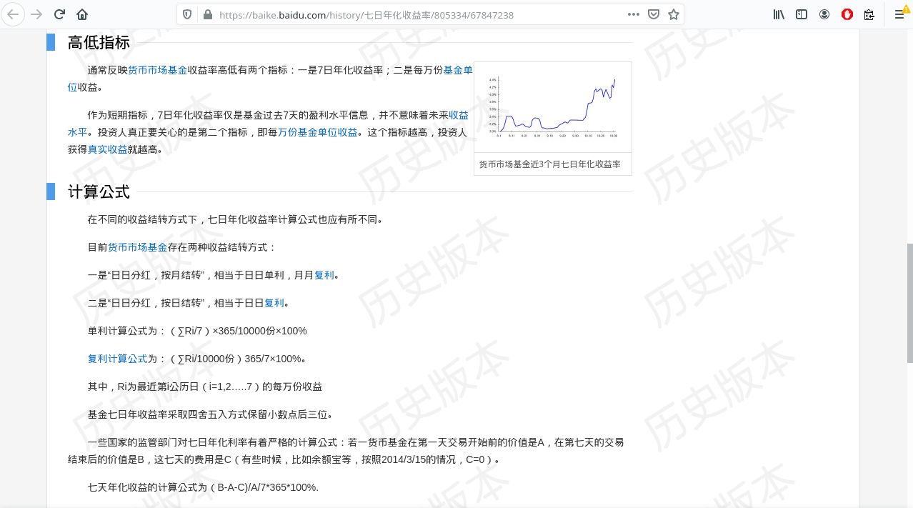
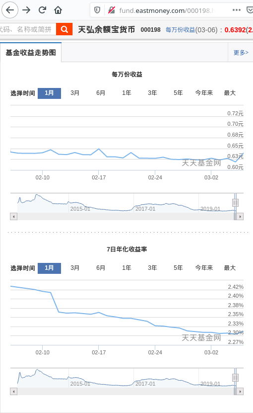
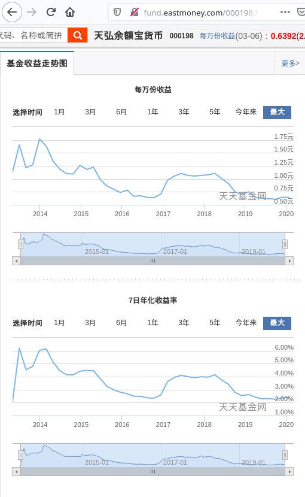

在大学的时候，我好奇货币基金的七日年化收益率是如何求得的？于是我去查了百度百科，得到如下解答：
七日年化收益率(2014-11-07百度百科历史版本)。

单利计算公式为：（∑Ri/7）×365/10000份×100%，复利计算公式为：（∑Ri/10000份）365/7×100%。
很遗憾，这个算法是有问题的，∑为求和符号，但无论是根据单利公式还是复利公式，算出的收益率和实际公布的都是不一致的，由此给我遗留了一个未决的历史问题，也启发了我百度不可尽信。
直到前几天，我点开了一个均值不等式链的几何证明视频，我惊叹这个证明的巧妙的同时也回想起了这个问题，原来解决“七日年化收益率”知识在高中就已经具备了。单利用算术平均，复利则应该用几何平均才对。目前的百度百科词条似乎已经更正了该错误：
1 | 货币市场基金存在两种收益结转方式： |
2 | 一是“月月分红，按月结转”，二是“日日分红，按日结转”， |
3 | 不管是按日结转还是按月结转，都相当于复利。 |
4 | 复利计算公式为：{[π（1+Ri/10000）]^（365/7）-1}×100% π表示连乘 i=1。。。7 |
5 | 其中，Ri为最近第i公历日（i=1,2…..7）的每万份收益 |
6 | 基金七日年收益率采取四舍五入方式保留小数点后三位。 |
但真的没有问题吗？按日结转可以直接套用复利公式是没有疑问的，但按月甚或更长期间结转是不能直接套用的，因为在结转日之前收益并不会结转为本金的一部分，在未结转期间实际上相当于单利的。
那么在实际中按月结转的货币基金是如何计算年化收益率的呢？空说无凭，以下是根据易方达天天发货币A 000829(结转日为每月15日)2020年1月的数据演算。
上图中，C/E/H列分别为基金公司公布的七日年化收益率、根据每万份收益推算的算术平均年化收益率、根据每万份收益推算的几何平均年化收益率。从数据中可以得出，易方达公布的是按每日复利计算的几何平均数。而在前面我的结论是，按月结转显然是不能直接套用的复利公式的，那么是我错了吗？鲁鲁修那句名言是怎么说的来着？
根据均值不等式，可以知道几何平均≤算术平均，D列会大于G列（差异很小，取四位有效数字时基本看不出差别，到第六位后才会出现差异）。但是反过来却不成立，相反算术和（E列）似乎总是小于几何积（H列），这里复利的展现了它的力量。我想要表达是易方达的数据实际上把年化收益率算大了，实际上七日年本身就具有误导性。
由此我得出的结论是，不能盲目相信别人给出的东西，需要数据支持的话，得学会自己分析处理。
习总告诫我们：不忘初心，牢记使命。当初我之所以想知道年化收益率的算法是因为在玩余额宝的时候，看到类似以下的趋势图：
余额宝近1月收益走势

余额宝成立以来收益走势

在这两张图中，每万分收益和七日年化收益率，从起初一点也不相似的趋势，随着时间的增加会变得越来越像，它们之间有何关联？当初的我确实无法解答这个问题，但现在我觉得终于有能力了。
还是以2020年1月易方达天天发货币A000829的数据演算
如果我们给每万分收益（灰线）添加一条7日移动平均趋势线（绿线），会发现绿线和每万分收益几何平均（红线）基本重合（为什么说基本呢，因为据我所知办公表格的移动平均实际是采用算术平均算法，而根据公理及演算表可知，算术平均实际是大于几何平均的）。而移动平均线（红线或绿线）和七日年化收益率（蓝线）走势很相似。
知道这个有什么用呢？根据年化收益率单利公式，我们很容易就知道，年化收益率就是每万分收益移动平均缩放0.0365倍，换句话说将每万分收益的坐标轴y1缩放0.0365倍就可以得到年化收益率的坐标轴y2。当然，这种说法是有问题的，严谨的说法是：每万分收益的移动算术平均和单利模式下年化收益线性相关，系数为0.0365。但这不要紧，因为七日年化本身就没有实际意义，只能作参考用。既然如此，完全可以用算术平均替换几何平均，这样我们就可以在一个绘图中只用每万分收益及其算术移动平均线就解算出所需的信息来。进一步的，通过自动义移动均线的算法及参数，可以定制快线和慢线。其他的想法是，如果将基金按资产配置份额分解再演算，股票市场的那一套分析方法是否能应用到基金市场呢？到了这一步，我感觉自己的知识储备不够用了。才华支撑不起野心，还是应该多读些书…